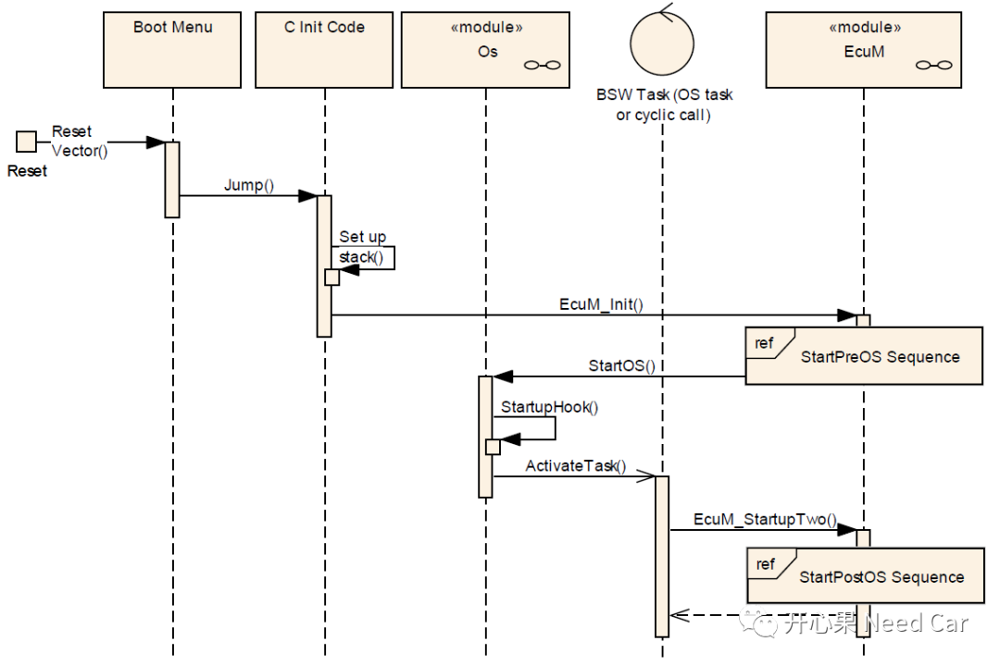
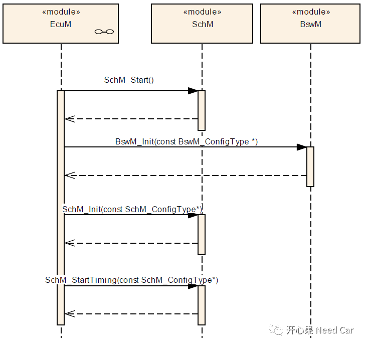

开心果 Need Car · 2021-10-02T13:32:00+08:00 · 微信原文
上一篇中讲只有Transceiver、Controller处于正常工作模式以后才能有效的收发报文，进而才能识别报文的类型（NM Message、XCP Message、Diagnostic Message、APP Message）。但识别出这些报文需要一个前提：ECU上电同时整个主程序运行起来，且需要一定的时间去识别报文类型。
项目中，唤醒事件（也称唤醒源）有效性验证为什么要设置一段时间？ECU上电，整个主程序如何运行起来？
本篇就上述问题进行分析。
在实际的网络管理项目中，大家可能会遇到这样的需求：收到有效唤醒事件（如：网络管理报文），网络激活，报文正常收发；如果收到的报文是非网络管理报文，ECU需要保持一定时间后休眠（如：ECU保持5s，即5s内ECU处于供电状态）。注意后者网络仍然在BSM（Bus Sleep Mode），只能此时间内接收报文，不能发送报文。如果ECU在该时间内收到有效唤醒事件（多数是网络管理报文，也可能是有效的Power ON信号报文），网络将激活，进而进行正常的报文收发。
注意：ECU唤醒是网络唤醒的前提条件，ECU唤醒并不一定网络唤醒，如果网络激活（进入Normal Mode）则ECU一定唤醒（RUN模式）。
为什么要ECU保持一段时间呢?这里说一下个人理解，ECU自身并不知道唤醒事件是不是有效，ECU只要被供电就从启动文件指定的位置开始执行程序。如果要识别该唤醒事件是不是有效需要上层模块（EcuM）识别，而EcuM从开始验证到确认该事件的有效性需要调用底层模块确认（如：Controller或者Transceiver），这需要时间，且EcuM的验证和确认一般是异步执行，这也需要时间。上述时间其实并不长，项目不同执行的时间不等（每个项目初始化模块数量和读NVM时间不同），但多数在几十毫秒内执行完，但又为什么会要求1s或者5s或者更长呢？个人理解：ECU被唤醒，整个冷启动（可以理解为与电压相关的启动）花费了“较长”的时间，废了这么大劲立马Shutdown有点“过分”，如果ECU下电又被干扰起来还需要重头再来（各个模块、外设初始化、读NVM等），既然这样还不如等待一段时间确定没有有效唤醒事件以后，ECU再走Shutdown流程，进而避免ECU频繁的唤醒->休眠->唤醒，注意是ECU，不是网络被唤醒->休眠->唤醒，网络只有有效唤醒源才能激活。
ECU如果要正常的运行程序，则需要供电，之后程序开始执行：启动文件->BootLoader->Application，进入“main”函数，也就是我们熟知的用户代码程序。用户代码程序包含ASWC的runnable以及各个模块的main handler（如：CanTrcv_30_Tja1145_MainFunction），这些程序在OS的调度下周期性或者事件触发执行，这也是上层模块可以收到消息和处理消息的基础。
这里主要分析EcuM管理的上电到程序运行过程。AUTOSAR中，EcuM分为Flexible和Fixed两种类型，因为Fixed并不支持多核且不灵活，本文主要讨论Flexible类型的EcuM。

如上图(1)所示，C Init Code一般是应用程序的main函数，即EcuM_Init在应用程序的main函数被调用，EcuM将控制ECU的启动流程，EcuM调用StartOS，让Os完成Task的激活。
EcuM_Init并不能完成MCU所有的初始化动作，在StartPreOS Sequence阶段主要完成DET模块（最先完成初始化，以便其它模块可以上报开发错误）以及一些硬件外设的初始化，如MCU、Port、Internal Watchdog等（主要根据项目需求设置要初始化的外设模块）。

如上图，EcuM_StartupTwo将完成SchM（Os），BSW模块的初始化，其中各个模块的初始化（Can_Init、CanIf_Init等）在BswM中完成。程序所需的所有外设、模块初始化之后，启动Scheduler 定时，即周期性的执行BSW/SWCs任务，至此Application程序得以运行。
(1)AUTOSAR_SWS_ECUStateManager.pdf